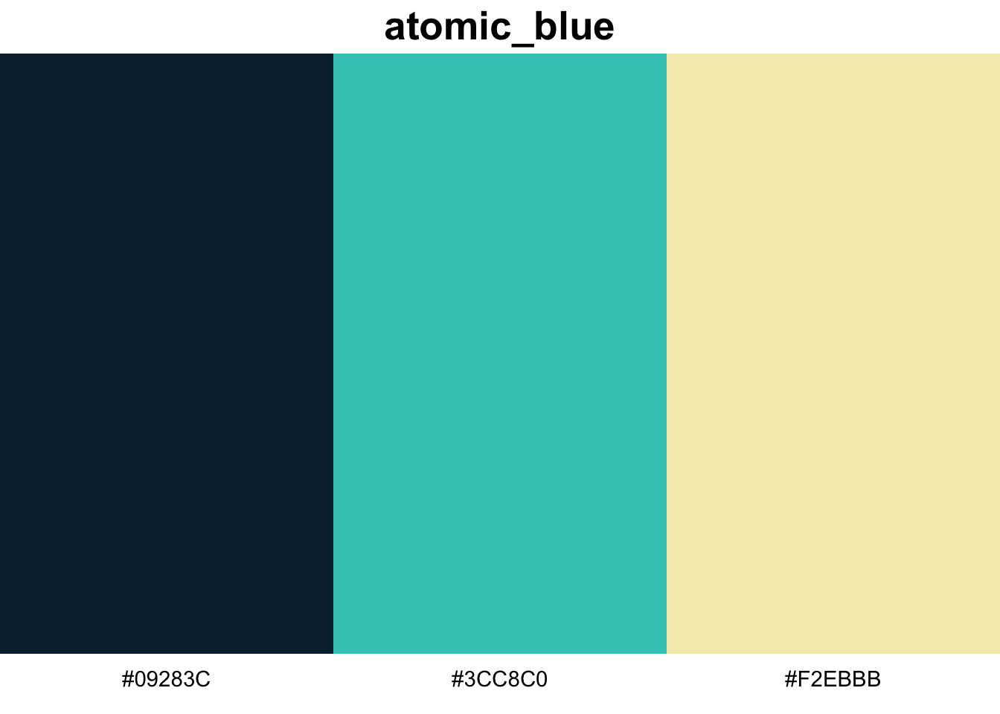

remotes::install_github("JoeyStanley/futurevisions")Today I released my first complete, functional, R package! It’s called futurevisions and it’s available on my github. It’s just a little one that contains about 20 different color palettes. I’ve had the idea to work on it for a few months and this week, I decided to go ahead and do it! The rest of this post is the README file for that package and explains the posters the palettes were based on, installation, usage, the list of palettes, and some background.
Introduction
The color palettes are based on NASA’s Visions of the Future poster series, which were produced through NASA’s Jet Propulsion Laboratory through the California Institute of Technology. They are retro-future-style posters depicting humans visiting other planets, moons, and exo-planets. In their words,
Imagination is our window into the future. At NASA/JPL we strive to be bold in advancing the edge of possibility so that someday, with the help of new generations of innovators and explorers, these visions of the future can become a reality. As you look through these images of imaginative travel destinations, remember that you can be an architect of the future.
The posters are available for download for free. You can get them as PDFs or as 20x30 inch TIFF files.
Demo
You can install the package through my github. The library imports ggplot2, so if there are problems, make sure you have ggplot2 installed already. (I’m not good at testing things so if there is trouble, let me know.)
You can then load it like a normal R package.
library(ggplot2)
library(futurevisions)The main two functions are futurevisions, which returns a list of colors, and show_palette, which produces a simple image using ggplot2 to highlight the colors. For example, here is the palette called mars.
show_palette("mars")futurevisions("mars")[1] "#DB3A2F" "#EAB33A" "#275D8E" "#902A57" "#F7EBD3" "#0B0C0B"This can be easily used within ggplot2 using scale_color_manual:
ggplot(mpg, aes(cty, hwy, color = factor(cyl))) +
geom_jitter() +
scale_color_manual(values = futurevisions("mars"))Note on color selection
This is not a rigorous sampling of colors. I picked a few colors from each poster that I felt were representative. They may not necessarily be colorblind-friendly. When using these palettes in data visualization, take care to ensure that your data is not misrepresented.
List of palettes
Gradient
These are palettes that may lend themselves better to more gradient purposes.
show_palette("ceres")show_palette("europa")show_palette("titan")show_palette("cancri")show_palette("pso")Diverging
These are palettes that may lend themselves more to highlighting deviations from a center point.
show_palette("earth")show_palette("enceladus")
show_palette("kepler186")show_palette("atomic_clock")Categorical
These are palettes that may lend themselves more to purposes where each color is a stand-alone entity with no meaningful order.
show_palette("venus")show_palette("mars")
show_palette("jupiter")show_palette("hd")show_palette("kepler16b")show_palette("pegasi")show_palette("trappest")show_palette("grand_tour")show_palette("atomic_red")show_palette("atomic_blue")
show_palette("atomic_orange")Background
A portion of the 3rd floor of the Main Library at the University of Georgia has been designed to be evocative of the 1950s when the library was first built. It has some retro-style furniture in a nice study room. It also has some of these Visions of the Future posters hanging up in the hallway. I walk down that hallway every day since the linguistics books, the DigiLab, the best study room on campus, and my personal carrel are all on that floor.
In fall 2019 I put together a series of workshops on data visualization. One of them was devoted to color, and in preparations for it, I saw that people have made color palettes based on all sorts of things: Wes Anderson movies, Skittles, Pokemon, you name it. I had the idea that the posters on that floor might make for some fun color palettes. I ended up making the package in February 2020.